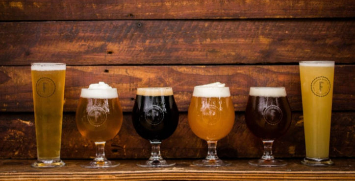
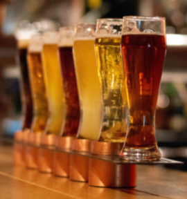
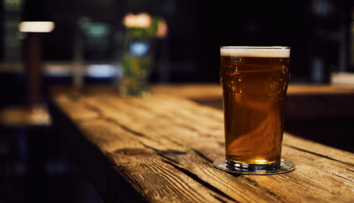

Styles
Technically speaking there are over 75 different styles of beer! To keep things simpler, we will go over the gerenal styles.
- Pale Ales(Suggested Pairing - Grilled Meats): Pale Ales are beers with a malty flavor and a golden color. They are hoppy and can taste a bit like biscuit. Some can be more bitter while others more matly.
- Dark Lagers(Suggested Pairing - Summer Sausage):
- Brown Ales(Suggested Pairing - Aged Gouda):
- India Pale Ales(Suggested Pairing - Finocchiona):
- Wheat Beers(Suggested Pairing - ):
- Strong Ales(Suggested Pairing - ):
- Belgian Styles(Suggested Pairing - ):




- Pale Ales(Suggested Pairing - Grilled Meats): Pale Ales are beers with a malty flavor and a golden color. They are hoppy and can taste a bit like biscuit. Some can be more bitter while others more matly.
- Dark Lagers(Suggested Pairing - Summer Sausage):
- Brown Ales(Suggested Pairing - Aged Gouda):
- India Pale Ales(Suggested Pairing - Finocchiona):
- Wheat Beers(Suggested Pairing - ):
- Strong Ales(Suggested Pairing - ):
- Belgian Styles(Suggested Pairing - ):